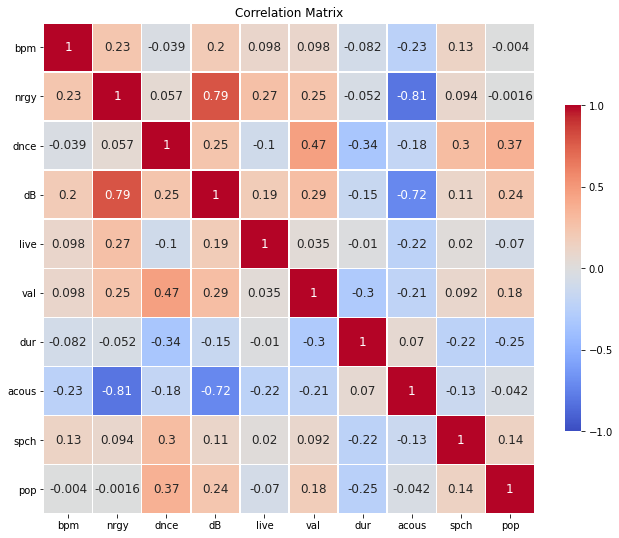
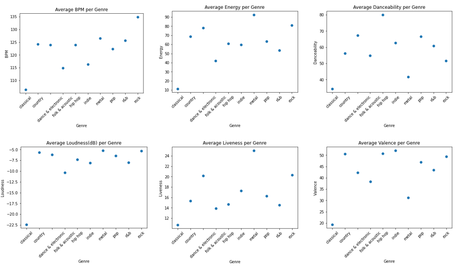
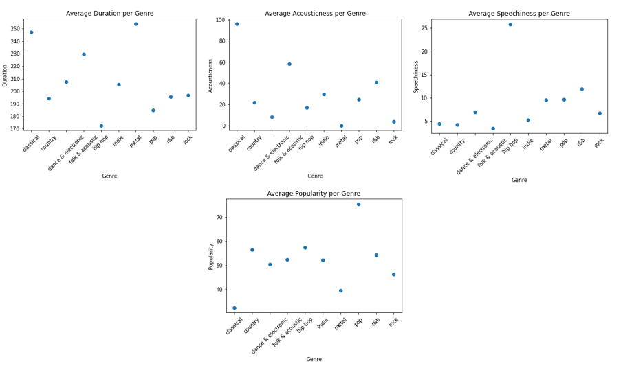
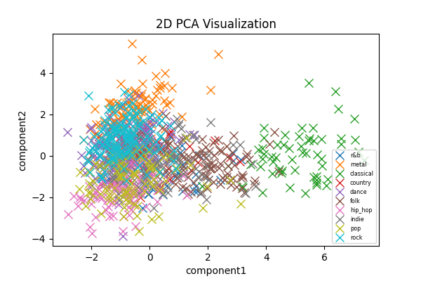
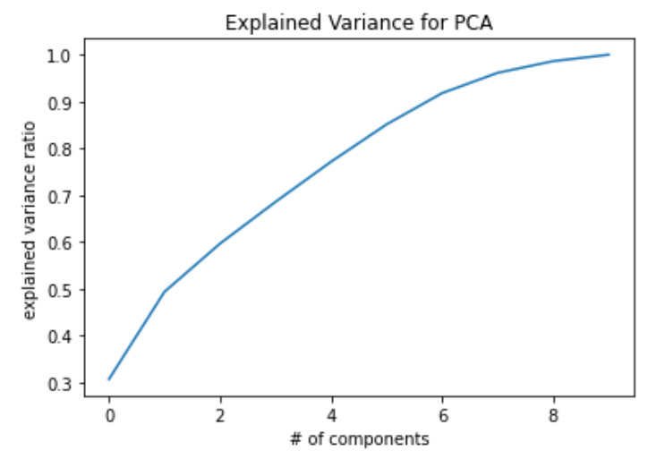
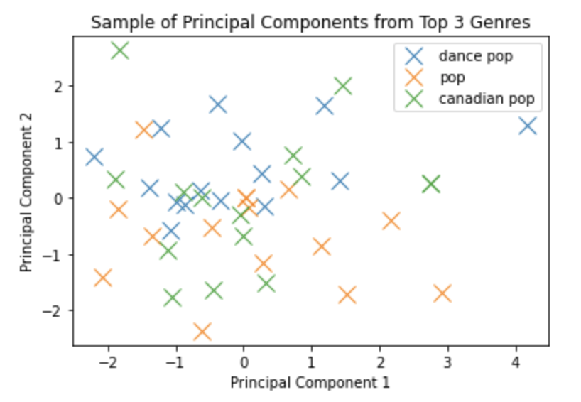
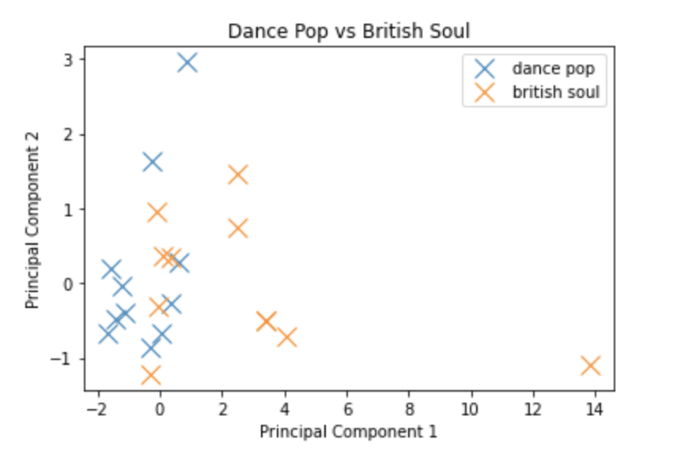
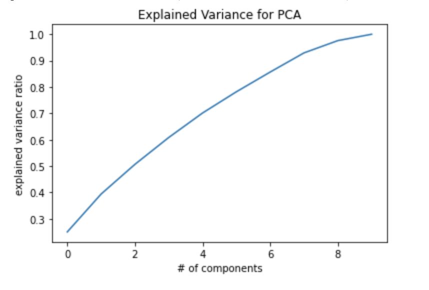
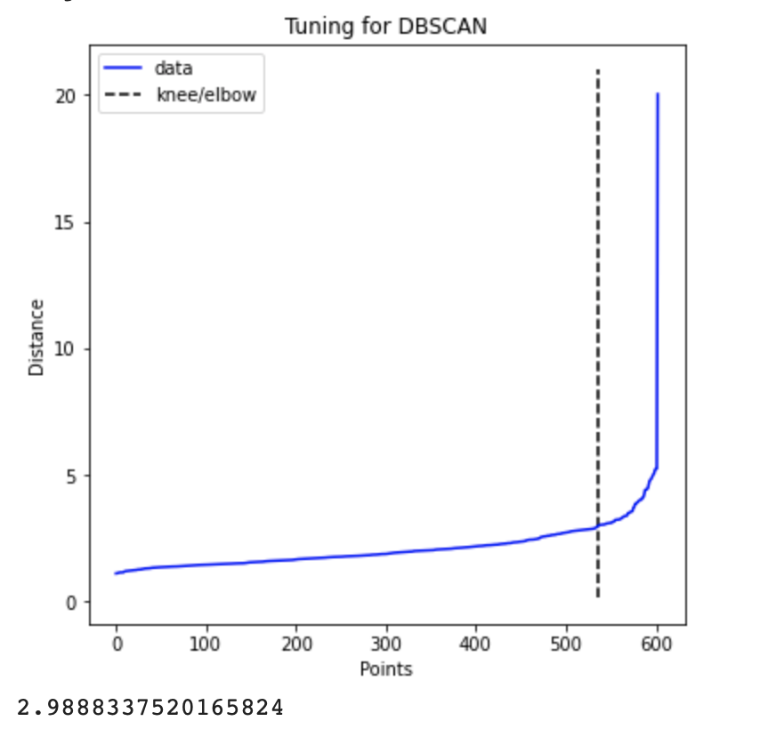

Ml-group-12-proj
Machine Learning Fall 2020 Project
This project is maintained by rtiruveedhi3
Team
Revanth Tiruveedhi, Abhishek Mattipalli, Shehruz Khan, Rahul Patel, Jesse Du
Intro/Background
Music today has become a staple of a user's daily lifestyle. Especially during the pandemic, music platforms have seen a great increase in subscriptions which shows how much people love their music [4]. Platforms such as Spotify, Apple Music, and Soundcloud facilitate access to music have a recommendation system in place that isn’t completely transparent to the listener. For example when you play through a playlist on Spotify, songs which it deems similar to your playlist get played and it also provides recommended songs to add while creating a playlist. While we've been recommended great music on these platforms, there’s been times where we’ve been unsatisfied as well.
Specifically, we have trouble finding new songs because the current music recommendation systems recommend similar artists which tend to be quite popular. While there’s nothing wrong with recommending similar popular songs, it would be nice to get recommended new similar songs that we probably have not heard. Then, we thought it would be useful to create a model that predicts the genre of an input song.
Problem Statement
We look to predict a song’s genre and recommend new songs from that genre or new closely related songs based on quantifiable features.
Data Collection
With our project, we require a set of songs and it’s respective features. To elaborate, the dataset of songs along with characteristic features requires a variety of genres. As stated in the earlier sections, the goal is to take an arbitrary song, ‘X’, and be to poll against other datapoints to understand what genre the song is associated with. From there the algorithm will be able to deliver and recommend songs that are most alike song “X”.
Spotify’s platform generates playlists of music based on genres for their audience to discover new music in each of their music categories, such as; Classical, Country, Hip Hop, Rap and more. To collect songs from these different genres, we isolated the top and upcoming playlists of music generated by Spotify. Together, we collected a total of 10 unique genres and took a note of the songs from each playlist:
- Classical – Classical New Releases
- Dance & Electronic – Dance Rising
- Hip Hop – Most Necessary
- Indie – All New Indie
- Dance & Electronic – Dance Rising
- Metal – New Metal Tracks
- Pop – Pop Rising
- R&B – The Newness
- Rock – New Noise
- Country – New Boots
Each playlist has approximately 70 – 150 songs and the dataset consists of a total of 964 unique songs organized by genre gathered from.
While exploring ways we can accrue characteristic information on Music, we came across a service offered by Spotify and its Developer tools to get Audio Features [6] for a particular track. The API service requires us to suggest a song and upon that it returns quantitative information on the track. More specifically, this chart below well defines the various features.
- Genre - the genre of the track (based on artist)
- Year - Year song was released
- Date added - Date added to Spotify platform
- Beats Per Minute (BPM) - The tempo of the song.
- Energy - The energy of a song - the higher the value, the more energetic the song is.
- Danceability - The higher the value, the easier it is to dance to this song.
- Loudness (dB) - The higher the value, the louder the song.
- Valence - The higher the value, the more positive mood for the song.
- Acousticness - The higher the value the more acoustic the song is
- Speechiness - The higher the value the more spoken word the song contains.
- Popularity - The higher the value the more popular the song is.
- Duration - The length of the song.
In terms of cleaning the data, some data features were insignificant to our data set, such as year and date added. All the songs in our data set were added recently and would not indicate any significant added benefit to our recommendation system. However, a datapoint that was altered was the genre of the song. Taking a deeper look at the system, Spotify assigns the genre of the song based on the top genre of the artist for the song. For example, while Travis Scott is known for this contribution to the rap genre and his top genre is rap, any song he makes regardless of its true genre is categorized as rap music. Therefore, to account for the erroneous labeling of genre for individual songs on Spotify’s part, the genre of the song was replaced by the genre category of the playlist the song was derived from.
Doing some further research, Spotify offers an interactive web application [7] that is able to scrape an input playlist based on the playlist ID (Spotify Playlist URI) and return each song’s data features. By utilizing this tool, we were able to input each of the 9 genre unique playlists to gather the features pertinent to this project.
Understanding our Data
Initially, we thought it would be good to explore our dataset further. For this, we decided to first create a correlation matrix that would show us linear relationships between our features. For example, it is evident that acousticness and energy have a strong negative relationship and loudness and energy have a strong positive relationship. This was expected as acoustic generally means no amplification, so songs with a high acoustic level should have low energy. However, it was slightly surprising to see such moderate to weak correlations between many features which implies that there is not a great deal of overlap in what each feature captures.
Then, we thought it would be useful to look at each specific feature to see how that differs between every genre. We averaged each feature on a genre-by-genre basis and created scatterplots for each feature as shown. This was helpful to see differences between genres in a visual format. For example, classical music frequently appears as an outlier for most features which makes sense as classical music is so different than music from other genres. Hip-hop was also a prominent outlier in speechiness which makes sense as hip-hop songs are lyrically dominant, and often contain a lot of words spoken very quickly. These findings led us to implement PCA, as we wanted to visualize differences or similarities between the “average” song in each genre and songs as a whole.
 PCA and Visualization
We decided to use PCA on our dataset because it’s very tough to visualize features in a 10-dimensional space. Our goal with this was not to reduce our feature set down to use further, but purely to view our feature plane reduced to a 2-dimensional level. Because of the variable ranges of each feature, we decided to scale our features utilizing StandardScaler, which standardizes each feature by normalizing it. We then used sklearn’s PCA implementation to fit a 2-component basis to our data set, with genre as the dependent variable. After this, we thought it would be valuable to look at the “average” song in each genre (average principal components within a genre) as well as every song in our dataset plotted.
.png)
For this plot titled “2D PCA Visualization for Genre Averages”, we took the “average” song for each genre by averaging each of the two principal components within each genre. For the plot titled “2D PCA Visualization”, we included every single song’s principal component breakdown and it’s associated genre on a single plot. Plots were created using matplotlib’s functionality.
After this, we decided to look at the explained variance ratio for different numbers of principal components and graphed this using matplotlib again. We primarily plotted this to see if dimensionality reduction would be useful to us going forward, but as we touch on in the results section, we concluded that it ultimately wouldn’t be too useful.
Analysis of PCA
For the plot where we averaged the two principal components within a genre, we plot 10 points with 1 for each genre. From this plot, it’s evident that the average classical and metal songs are quite different from the average song from any other genre. For the rest of the genres, it does not look like there’s a significant difference in the feature space between them. This was a little concerning at first, as we thought it would be difficult to predict a genre if the average song from a decent number of genres was fairly similar.
With this plot, we decided to plot every single song with it’s associated genre on one plot. It’s evident again that classical music is much different than the rest of the songs in our data set, and metal music to some extent is quite different. However, there is a large cluster of points that exists with a moshpit of different genres. This again was a bit worrisome, as it seems to us like there is something beyond features of a song that dictates genre which is tough to pick up on. However, we think that a big part of our project is not only predicting the genre but also recommending songs that are close on a feature basis.
Explained variance =
- 1 Component - 0.3062304431012422
- 2 Component - 0.4930880498118107
- 3 Component - 0.5960980412287968
- 4 Component - 0.68540275256387
- 5 Component - 0.7712067665365119
- 6 Component - 0.8510265665809842
- 7 Component - 0.9178439164946288
- 8 Component - 0.9612058493605672
- 9 Component - 0.9862073961553246
- 10 Component - 0.9999999999999998
After implementing PCA with 2 components, we wanted to see if dimensionality reduction was something that would be beneficial for us. With 2 components, the transformed dataset captures roughly 50% of variance which isn’t a great amount but it gives some credibility to the 2-dimensional plots that we have. We start to see an asymptote around 8 components, however because 10 features are not that much more computationally expensive, we decided to stick with all 10 features for our data set going forward. Now that we have analyzed relationships between features and genres, our next step is to create the part of our model where we predict an input song’s genre.
Next Steps with Method
After implementing PCA and visualizing the data, the next step is to create the part of our model where we predict an input song’s genre. We think that there are two feasible approaches to this, and we wish to implement both. The first is to use the features of the input song to find the closest “average” song from our set of genres, and we would predict that our input song is of the closest genre average. In terms of distance functions, we think Euclidian would be good and straightforward to understand. We think that returning the two closest genres and finding the distance of the nth-nearest neighbor in each genre (predicting using the smaller distance) would be a good method as well. Regarding the approach where we predict one genre using the closest average, we would then return the nth-nearest neighbors to our input song within that genre.
The second method we think would be beneficial would be to consider the nth-nearest neighbors to our input song. We would then find the number of songs from each genre in that nearest neighbor set, and the genre with the most songs in that set would be the predicted genre. Both of these methods have their positives and negatives, with the first being more simple but the second being more holistic. We will implement both of these for our final report, and include the results.
Our next future steps in the project is to use Supervised learning to test and improve our method to identify genres based on a given input. The approach is the use Neural Networks and/or deep learning with libraries over scikit learn to build a basic algorithm that is able to train and test from the data that we have. By doing so, we are able to emphasize a more supervised learning approach to classifying a newly introduced song. This methodology was suggested to us from a TA and will be explained in whole during lecture in the upcoming weeks. With the better understanding of these topics, we will choose to pursue this part of our method plan.
Testing Initial Results
With our initial test results, we collected data in a similar fashion to the overall dataset on the Astroworld album. We attempted to showcase initial findings for genre prediction by using the first method that was explained above. To detail the process, we used euclidean distance between each of the songs in the Astroworld album and the average of the features in each genre. This provided us a range of distances at which we concatenated the smallest distances to each song in the album. After running through this process, we have ended with the following results.
- SICKO MODE - metal
- BUTTERFLY EFFECT - pop
- STARGAZING - metal
- CAN'T SAY - pop
- YOSEMITE - pop
- NO BYSTANDERS - dance & electronic
- WAKE UP - dance & electronic
- ASTROTHUNDER - hip hop
- HOUSTONFORNICATION - dance & electronic
- STOP TRYING TO BE GOD - metal
- SKELETONS - pop
- 5% TINT - pop
- R.I.P. SCREW - pop
- COFFEE BEAN - indie
- CAROUSEL - pop
- WHO? WHAT! - hip hop
- NC-17 - hip hop
While on Spotify’s end has each of these songs listed as rap due to the artist of the album, Travis Scott, heavily makes rap music. The results seem to show a somewhat close relationship to the song features and the song’s true genre (based on our own listening experience and our general experiences with classifying music by listening). While SICKO MODE and STARGAZING are not necessarily best described as metal genres, we believe that other methods will prove as improvements. As we have mentioned, we plan to further pursue other methods of classification such as KNN, other distance metrics and even supervised learning pathways.
Pivot/Discussion
Initially, our goal with our project proposal was to create clusters of songs based on features of the songs rather than focus on their genre. We thought that songs of the same genre were often very different, so it would be good to find clusters of songs. This section will include a discussion on the progress we made on that initial goal, and why we decided to pivot.
We used a dataset from Kaggle that included a list of top songs from 2010-2019 which included the same 10 features that our new dataset contains. We thought it would be good to visualize this data, and maybe cut down on the number of dimensions, so we used both PCA and tSNE to experiment with both. With PCA, we used StandardScaler on the dataset and fit our PCA with 2 components. The results from this were slightly skewed as the top genre in our data set, “dance pop”, had more than 300 songs while the second most populous genre in our data set only had 60 songs. We then decided to plot a random sample of the principal components of 15 songs for each of the top three genres, and we saw from this that there was no real pattern in principal components within songs of the same genre. This was highlighted when we decided to plot the principal components of two genres which we thought would be very different, “dance pop” and “british soul” - however there was sizable overlap between the principal components and no real discernable pattern for either genre.
 We then decided to plot explained variance for 1 through 10 principal components, and had that two principal components gets us about 40% of our total explained variance which isn’t great. What we got from this was that 10 components would not be that computationally expensive so we did not have to worry about dimensionality reduction. We also decided to use tSNE to further test our hypothesis, and the plot below shows that the visualization we obtained with tSNE was still random and not really dependent on genre.
Our next step was then to create clusters based on the features of our dataset, rather than relying on genre. We decided that DBSCAN would be best as we wanted the ability to hypertune our model and not rely on concentric measurements only, and got to work hand tuning the model. We decided to use the Nearest Neighbors algorithm included in sklearn to tune our epsilon parameter, and we used the 10th nearest neighbor as our benchmark. We found a knee point detection package in Python, called “kneed”, that would find the elbow point for our nearest neighbor plot and we used this to find that our epsilon should roughly equal 3. Then, we got to work tuning our minPts parameter by hand. We found that basically any value of minPts would lead to a vast majority of the dataset to be included in the same cluster, with the other two to three clusters being much smaller and only having a few songs. This was a tough problem to overcome, and after consulting with a TA, we came to the conclusion that it would be best for us to pivot by compiling a dataset on our own and shifting the focus of our project.
We then decided to continue the predictive portion of our original idea, but this time we decided to focus on genre as well. Us thinking that features could substitute for genre of a song was a bit naive, as we all know that two songs with a very similar feature profile could belong in two completely different genres intuitively.
Regarding future steps in our project now, we touched on them in our methods section. Our goal is to create a model that allows us to input a song, predict its genre, and recommend new songs from that genre or very similar songs on a feature basis. We think that this would be very useful in our own lives and our friends lives, as we all experience the struggle of listening to the same couple of songs on repeat.
References
[1]https://developer.spotify.com/documentation/web-api/reference/tracks/get-audio-features/
[2]https://www.kaggle.com/leonardopena/top-spotify-songs-from-20102019-by-year
[3]https://kwellesly.github.io/ML4Anime/
[5]https://github.gatech.edu/pages/bpatil7/music.generation/#ref2
[6]https://developer.spotify.com/documentation/web-api/reference/tracks/get-audio-features/
[7]http://organizeyourmusic.playlistmachinery.com/